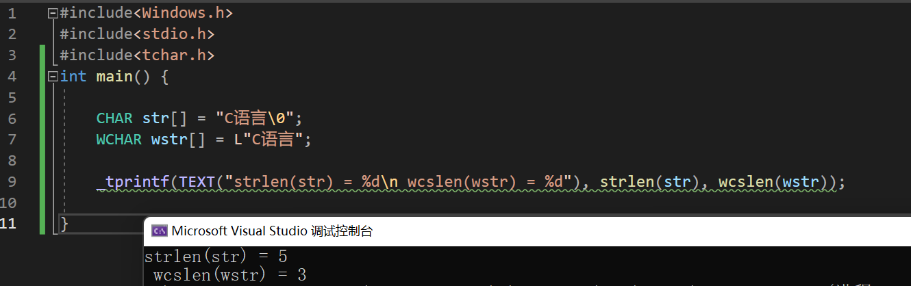
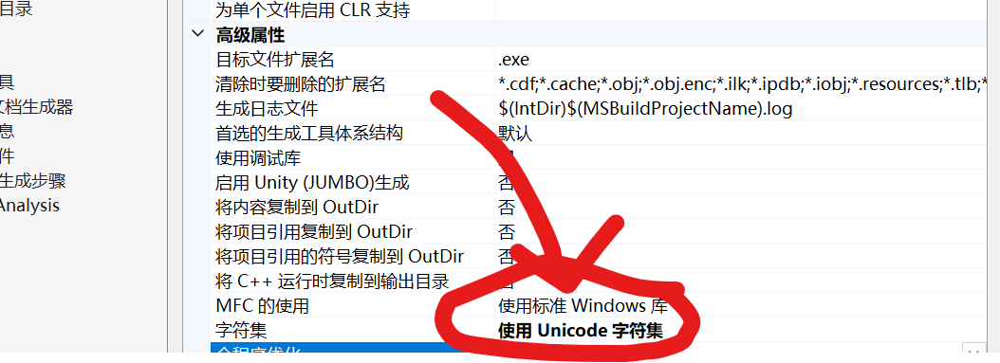

摸鱼ing（1）-Windows-API-程序设计初探（2）
Windows API 编程初探2
字符串主题
入门
下面我们开始入门简单的字符串主题：啥意思呢？回顾我们C语言的API。我们是如下声明一个char类型或基于char类型的数组
char typicalChar = 'A';
char* TCPtr = "Hello!My friend~";
char arrayCPtr = "hello,my frined~"; 我们马上可以看到，char是一份字节大小，那么下面的arrayCPtr就指明需要17个字节来存储。
wchar_t类型
可是，仅仅使用char可能存储不下如今丰富的字符。所以，转向扩展char是必要的，wchar,也就是widechar应运而生。在Windows 2000之后所有的Windows系统都在底层上支持Unicode字符集。
我们这样声明与初始化一个wchar变量：
wchar_t wideChar = L'A'
类似的：
wchar* ptrW = "Hello";
wchar ptr[7] = "Hello!"; 但是注意：如果我们还是选择
printf("%s", ptrW);
printf("%s", ptr); 则只会打印首元素，这是因为字符串类型不匹配，人话讲就是：wchar字符串不用%s打印，而是ls
printf("%ls", ptrW);
printf("%ls", ptr); 或者是
wchar_t* WPTR = {'a','\0'};
wprintf("%s",WPTR); 或是直接调用setlocal函数做默认的设置！
#include <stdio.h>
#include <string.h>
#include <locale.h>
int main()
{
//使用系统默认的设置调用setlocale(LC_ALL, "");
setlocale(LC_ALL, "");
const wchar_t * chWord = L"疯狂程序人—码农哈哥";
printf("%s",chWord);
}Windows下的字符和宽字符
Windows整理自己的活：他们定义了他们自己的字符类型：在winnt.h文件下可以找到：
//
// Basics
//
#ifndef VOID
#define VOID void
typedef char CHAR;
typedef short SHORT;
typedef long LONG;
#if !defined(MIDL_PASS)
typedef int INT;
#endif
#endif
//
// UNICODE (Wide Character) types
//
#ifndef _MAC
typedef wchar_t WCHAR; // wc, 16-bit UNICODE character
#else
// some Macintosh compilers don't define wchar_t in a convenient location, or define it as a char
typedef unsigned short WCHAR; // wc, 16-bit UNICODE character
#endif
typedef WCHAR *PWCHAR, *LPWCH, *PWCH;
typedef CONST WCHAR *LPCWCH, *PCWCH;
typedef _Null_terminated_ WCHAR *NWPSTR, *LPWSTR, *PWSTR;
typedef _Null_terminated_ PWSTR *PZPWSTR;
typedef _Null_terminated_ CONST PWSTR *PCZPWSTR;
typedef _Null_terminated_ WCHAR UNALIGNED *LPUWSTR, *PUWSTR;
typedef _Null_terminated_ CONST WCHAR *LPCWSTR, *PCWSTR;
typedef _Null_terminated_ PCWSTR *PZPCWSTR;
typedef _Null_terminated_ CONST PCWSTR *PCZPCWSTR;
typedef _Null_terminated_ CONST WCHAR UNALIGNED *LPCUWSTR, *PCUWSTR;
typedef _NullNull_terminated_ WCHAR *PZZWSTR;
typedef _NullNull_terminated_ CONST WCHAR *PCZZWSTR;
typedef _NullNull_terminated_ WCHAR UNALIGNED *PUZZWSTR;
typedef _NullNull_terminated_ CONST WCHAR UNALIGNED *PCUZZWSTR;
typedef WCHAR *PNZWCH;
typedef CONST WCHAR *PCNZWCH;
typedef WCHAR UNALIGNED *PUNZWCH;
typedef CONST WCHAR UNALIGNED *PCUNZWCH;
#if _WIN32_WINNT >= 0x0600 || (defined(__cplusplus) && defined(WINDOWS_ENABLE_CPLUSPLUS))
typedef CONST WCHAR *LPCWCHAR, *PCWCHAR;
typedef CONST WCHAR UNALIGNED *LPCUWCHAR, *PCUWCHAR;
//
// UCS (Universal Character Set) types
//
typedef unsigned long UCSCHAR;
//
// Even pre-Unicode agreement, UCS values are always in the
// range U+00000000 to U+7FFFFFFF, so we'll pick an obvious
// value.
#define UCSCHAR_INVALID_CHARACTER (0xffffffff)
#define MIN_UCSCHAR (0)
//
// We'll assume here that the ISO-10646 / Unicode agreement
// not to assign code points after U+0010FFFF holds so that
// we do not have to have separate "UCSCHAR" and "UNICODECHAR"
// types.
//
#define MAX_UCSCHAR (0x0010FFFF)
typedef UCSCHAR *PUCSCHAR;
typedef const UCSCHAR *PCUCSCHAR;
typedef UCSCHAR *PUCSSTR;
typedef UCSCHAR UNALIGNED *PUUCSSTR;
typedef const UCSCHAR *PCUCSSTR;
typedef const UCSCHAR UNALIGNED *PCUUCSSTR;
typedef UCSCHAR UNALIGNED *PUUCSCHAR;
typedef const UCSCHAR UNALIGNED *PCUUCSCHAR;
#endif // _WIN32_WINNT >= 0x0600
//
// ANSI (Multi-byte Character) types
//
typedef CHAR *PCHAR, *LPCH, *PCH;
typedef CONST CHAR *LPCCH, *PCCH;
typedef _Null_terminated_ CHAR *NPSTR, *LPSTR, *PSTR;
typedef _Null_terminated_ PSTR *PZPSTR;
typedef _Null_terminated_ CONST PSTR *PCZPSTR;
typedef _Null_terminated_ CONST CHAR *LPCSTR, *PCSTR;
typedef _Null_terminated_ PCSTR *PZPCSTR;
typedef _Null_terminated_ CONST PCSTR *PCZPCSTR;
typedef _NullNull_terminated_ CHAR *PZZSTR;
typedef _NullNull_terminated_ CONST CHAR *PCZZSTR;
typedef CHAR *PNZCH;
typedef CONST CHAR *PCNZCH;
//
// Neutral ANSI/UNICODE types and macros
//
#ifdef UNICODE // r_winnt
#ifndef _TCHAR_DEFINED
typedef WCHAR TCHAR, *PTCHAR;
typedef WCHAR TBYTE , *PTBYTE ;
#define _TCHAR_DEFINED
#endif /* !_TCHAR_DEFINED */
typedef LPWCH LPTCH, PTCH;
typedef LPCWCH LPCTCH, PCTCH;
typedef LPWSTR PTSTR, LPTSTR;
typedef LPCWSTR PCTSTR, LPCTSTR;
typedef LPUWSTR PUTSTR, LPUTSTR;
typedef LPCUWSTR PCUTSTR, LPCUTSTR;
typedef LPWSTR LP;
typedef PZZWSTR PZZTSTR;
typedef PCZZWSTR PCZZTSTR;
typedef PUZZWSTR PUZZTSTR;
typedef PCUZZWSTR PCUZZTSTR;
typedef PZPWSTR PZPTSTR;
typedef PNZWCH PNZTCH;
typedef PCNZWCH PCNZTCH;
typedef PUNZWCH PUNZTCH;
typedef PCUNZWCH PCUNZTCH;
#define __TEXT(quote) L##quote // r_winnt
#else /* UNICODE */ // r_winnt
#ifndef _TCHAR_DEFINED
typedef char TCHAR, *PTCHAR;
typedef unsigned char TBYTE , *PTBYTE ;
#define _TCHAR_DEFINED
#endif /* !_TCHAR_DEFINED */
typedef LPCH LPTCH, PTCH;
typedef LPCCH LPCTCH, PCTCH;
typedef LPSTR PTSTR, LPTSTR, PUTSTR, LPUTSTR;
typedef LPCSTR PCTSTR, LPCTSTR, PCUTSTR, LPCUTSTR;
typedef PZZSTR PZZTSTR, PUZZTSTR;
typedef PCZZSTR PCZZTSTR, PCUZZTSTR;
typedef PZPSTR PZPTSTR;
typedef PNZCH PNZTCH, PUNZTCH;
typedef PCNZCH PCNZTCH, PCUNZTCH;
#define __TEXT(quote) quote // r_winnt
#endif /* UNICODE */ // r_winnt
#define TEXT(quote) __TEXT(quote) // r_winnt
typedef SHORT *PSHORT;
typedef LONG *PLONG;
#define ALL_PROCESSOR_GROUPS 0xffff 在这里我们找到了两个东西：
#ifndef _MAC
typedef wchar_t WCHAR; // wc, 16-bit UNICODE character
#else
// some Macintosh compilers don't define wchar_t in a convenient location, or define it as a char
typedef unsigned short WCHAR; // wc, 16-bit UNICODE character
#endif 首先是wchar_t被重写位WCHAR。对于一些甚至没有wchar的编译器直接对unsigned short起别名。
其次是TEXT宏，这个宏便捷的帮助我们直接将普通的字符串升级为宽字符串，其做法不是强制转换，而是：
#define __TEXT(quote) L##quote
#define TEXT(quote) __TEXT(quote) ##是令牌粘贴，就是直接把L和字符串连接在一起返回，比若说：
TEXT("Hello")--- Compiler----> L"Hello" 我们看到，上面的定义给出了：PSTR和LPSTR的小东西。他们都是CHAR（本质上就是Char），而P C STR 和 LP C STR则是Const类型的字符串。也就是常字符串！
那对于TCHAR这样Windows自己给出了字符串，我们应该怎么处理呢了，答案是万能的WIndows又帮我们干好了。使用P T STR和LP T STR就可以胜任这些工作！
常见的字符串处理工作
获取字符串的长度
下面我们要说的是如何获取字符串的长度，请看strlen和wstrlen.
size_t strlen(const char* str);
size_t wstrlen(const wchar_t* str); size_t，如其所说的那样，衡量的是大小的类型。其定义查看建议自行搜索，这里做阐述。因为不是重点我想说的！
来试试看：
#include<Windows.h>
#include<stdio.h>
#include<tchar.h>
int main() {
CHAR str[] = "C语言\0"; // 这个函数返回占比字节的大小
WCHAR wstr[] = L"C语言"; // 这个函数返回的是宽字符的个数
_tprintf(TEXT("strlen(str) = %d\n wcslen(wstr) = %d"), strlen(str), wcslen(wstr));
} 
注意到_tprintf是一个随系统环境而改变的宏函数，在支持UNICODE字符集的情况下，系统将会自动的转化之成为wprintf！
类似的：我们还有一个叫做tcslen这个函数，他是这样被定义的：

好鸡肋啊，那如果我们改一下不支持Unicode子集呢？仍然是右键项目——属性，转到这个地方：

改成

发现变灰了！转向再看发现跳转到了：>